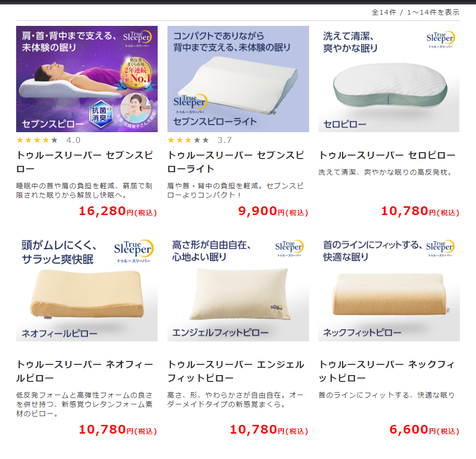

プロジェクト計画１
当初の目標としてはプログラミング言語を学習してゲームを作ろうとした。しかし、自分の身近に起きている問題を解決するための動機づけにゲームを作るという理由がどうしても結びつかなかった。
なぜなら「安眠」というカテゴリにおいてゲームをするということはあまりにも「安眠」からかけ離れたものだからだ。しかし、「正しい睡眠をとる」ためにデータを集めたり、集めたデータをグラフにまとめたりするのにプログラミング言語は必要になると思うので、プログラミング言語の習得の目標は変えないが主戦力ではなくなると思う。
正しい睡眠をとるのに必要なもの
●敷きベットや掛け布団、枕などの寝具
●適度の疲労感
●自然な香りや音
しかし、上記の条件は忙しい現代人には満足に満たすのは難しい。特に疲労感については日々の内容によりムラがあるので安定した疲労感を演出することは不可能に近い。自然な香りや音の演出で脳を休ませやすい環境を整えるにも毎日寝る前にお香を炊いたり、色々と準備が面倒である。そこで今回の研究プロジェクトとして寝具に目をつけた。
市販の安眠枕はどれもしっかり作られたものほど値段が高い傾向がある。
>
おまけに自分に合わなかったら高い買い物をして損をした気分になる上に余計に体に疲れを作ってしまう原因となる。今使っている枕に追加することで高い睡眠効果を得られる道具を作りたい。